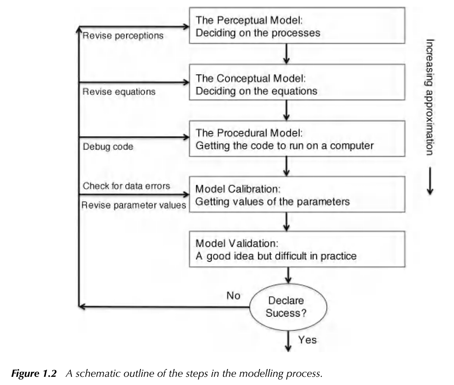

Chapter 7 Spatial Models and GIS Integration
7.1 DEM processing
7.1.1 Learning Module 11
7.1.1.1 Objective:
Users will explore basic hydrological tools through the process of DEM preprocessing and defining stream networks for a watershed in the Fraser Experimental Forest in Colorado using Whitebox Tools for R. This exercise will also demonstrate methods for writing functions and efficiently handling multiple files simultaneously, including importing, processing, and exporting data within the context of Whitebox Tools for R.
Hydrological analysis preprocessing involves the use of digital elevation model (DEM) raster data to establish a watershed model and a simulation of surface hydrological processes. These steps enable us to quantify key parameters such as flow accumulation, stream network characteristics, and hydrological connectivity, which are essential for studying the dynamics of water movement within a landscape. Overall, preprocessing is the set of foundational steps in hydrological modeling and analysis.
Whitebox Tools is an advanced geospatial data analysis platform that can be used to perform common geographical information systems (GIS) analysis operations. This platform was developed with the Center for Hydrogeomatics in Guelph University so it is focused on hydrological analysis. With just a DEM, it allows us to produce a multitude of outputs that can be used for future analysis (Lindsay, 2016) doi:10.1016/j.cageo.2016.07.003). While we are demonstrating its use in R, these tools are also available in QGIS and Python platforms.
7.1.2 THE LINK TO THE REPO IS HERE
7.1.3 Labwork (20 pts)
7.1.3.1 Installing libraries
We are going to try installing the whitebox R package from CRAN as it should be the simplest method.
However, if this does not work for you, you can install the development version from GitHub by putting this inside a code chunk:
if (!require(“remotes”)) install.packages(‘remotes’) remotes::install_github(“opengeos/whiteboxR”, build = FALSE)
More information on installation can be found at: https://cran.r-project.org/web/packages/whitebox/readme/README.html
Helpful whitebox documentation can be found at https://jblindsay.github.io/wbt_book/preface.html. Essentially, we will be using input rasters via filepath and output filepaths as arguments for various whitebox functions. The script is designed to perform functions on all rasters in a given folder at once.
When writing scripts, developers typically follow a standard workflow:
1. Import required libraries
2. Generate functions useful throughout the script
3. Establish working directories or paths to other directories if needed
4. Import data
5. Data Cleaning and Preprocessing - this may involve handling missing values, removing outliers, converting to preferred units. etc.
6. Exploratory Data Analysis - it is beneficial to explore data visually to help understand the characteristics of the data.
7. Apply functions, or models or other analytical techniques
8. Evaluate results - If modeling, this may involve comparing model predictions with observed data or conducting sensitivity analysis
9. Visualize and report - plots, maps and tables can be effective ways to communicate findings.
While you might find slight variations among collaborators, following this general workflow ensures that our scripts are structured in a way that facilitates easy sharing and reproducibility of results.
7.1.3.1.1 Generate functions
Since we have imported the required libraries, let’s generate some functions.
Q1.(2 pnt) What does date: “19 February, 2026” in the header do?
ANSWER:
Q2.(3 pnt) What does ‘recursive = TRUE’ do? What would the ‘recursive = FALSE’ return? ANSWER:
EXTRA (1 pnt) : Rewrite this function to generate ‘splitbase’ with fewer lines. For example, what happens when you replace ‘basename’ in ‘splitbase <- strsplit(basename,’_‘)[[1]][1]’ with ‘splitpath[[1]][2]’?
Q3. (3 pnt) What is the point of writing a function? Why do you think it is advantageous to write functions early in your script? ANSWER:
7.1.3.2 Resample DEMs
Here we will start with LiDAR data with 0.5m resolution. While this resolution has useful applications, a high resolution DEM can make hydrological models very computationally expensive with little or no improvement to the output. If you have the option of high resolution data in your work, you can test model outputs at different resolutions to determine what is the most efficient and effective resolution for your work. Here, we will resample our LiDAR data to a 10m resolution.
Q4. (3 pnt) Did we use the function extractsitenames in the above chunk? How? What did it do?
ANSWER:
Let’s quickly check our work by importing a resampled DEM and checking the resolution.
Note: This can also be done without importing the raster to the workspace by installing the library gdalUtils.
Q5.(2 pnt) What is the resolution of the resampled DEM? Where and how could we change the resolution to 30m if desired?
ANSWER:
7.1.3.3 Filling and breaching
When performing hydrological analysis on a DEM, the DEM usually needs to be pre-processed by ‘filling’ or ‘breaching’ any depressions or sinks to create a hydraulically connected and filled DEM. There are several depression or pit filling options available in whitebox. Breach depressions can be a better option that just pit filling according to whitebox documentation, however, some users argue that this can smooth too much, resulting in an altered watershed delineation. It is prudent to investigate different DEM pre-processing methods and their resulting DEM. You can fill depressions directly, breach depressions and then fill them, applying breach or fill single cell pit before breach/fill depressions, and use the one that generates the most reasonable watershed delineation results. Here we are going to make extra sure our flowpaths are uninhibited by first filling in single cell pits, and then breaching any larger depressions.
Q6 (2 pnt) What is breach1? How is lapply using breach1? ANSWER:
7.1.3.4 Flow direction and accumulation rasters
Q7 (2 pnt) Check out the WhiteboxTools User Manual. What does a d8pointer raster tell us and what might we use it for? ANSWER:
Let’s visualize some of our work so far:
Q8. (3 pnt) What are the units for the values that you see in each of these legends? It may be helpful to check out the Manual again. ANSWER:
7.1.3.5 Streams
Define streams using the flow accumulation raster. Use of the wbt_extract_streams function will return a raster with stream cells indicated only.
Sometimes we would prefer to see the stream within the watershed boundary. Here we are using the extent of the flow accumulation raster to generate a raster with ‘0’ to indicate watershed cells, along with stream cells indicated by the streams.tif. This is a demonstration for one watershed.
7.1.3.6 Final thoughts:
There are many more hydrological preprocessing and analysis tools available through Whitebox for R. If you are interested in watershed delineation in R, there is a tutorial here that is fairly easy to follow. However, if you find that you use these tools frequently and do not use R much in other work, you may also consider these options for hydrological analysis:
1. SAGA
SAGA tools offer a versatile suite of geospatial processing capabilities accessible through both QGIS and ArcGIS plugins as well their standalone GUI interface. Often I find the GUI easiest for preprocessing, then I will import SAGA’s output rasters to QGIS for formatting or map making, or into model scripts. SAGA has a robust online support community, so it can be a valuable resource for hydrological work.
2. Similarly, Whitebox GAT tools can be used as plugin to QGIS and ArcGIS, providing Whitebox functionality directly with in a GIS environment.
When using these tools, the order of operations is similar to our work above: fill the DEM, generate a flow direction and flow accumulation raster, identify channels, delineate watersheds, then you can move forward according to the specificity of your project.
Ultimately, the choice of workflow is yours, but I suggest documenting your process as you proceed, including links or file paths to projects and scripts within a written or diagrammed workflow (or workflow software). It’s also important to carefully consider the organization and storage of your projects and files. For instance, files generated by a GIS project should be readily accessible to any associated scripts. Returning to a preprocessing step can be (sometimes painfully) challenging if there’s no clear way to trace back your workflow and regenerate a crucial layer.

Take another look at the model selection process from Bevin (above), and think about how you can make your workflow easier to recall and repeat. A little planning upfront can save so much time later. (Seriously, so. much. time.)
To document and track iterations efficiently, consider using a tool that fits your workflow:
- Bookdown in R - this is useful if your work involves R scripts or Markdown. This is the tool we used to develop the tutorial ‘book’ for this course and I frequently use it to develop and share my own research scripts, figures and workflows.
- Obsidian or Notion - Better options if R scripts aren’t a major part of your work, allowing for flexible organization and easy cross-referencing.
- You can even make a slide in Power Point with a work flow chart, inserting links, file paths and written steps into the chart as you go.
As you work on your term projects over the next couple of weeks, keep these tips in mind. If you haven’t started the thesis course yet (LRES 575), you’ll likely want to revisit the workflow you develop now and continue refining it for your thesis. Set yourself up for success by making it easy to track, recall and build on your work. Think about how you can make this process smoother for your future self. Your future self will thank you.
Good Luck!